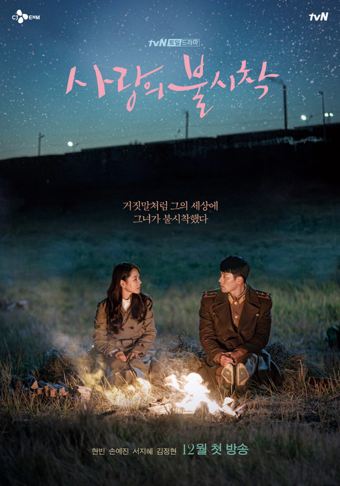

Najlepsze seriale
1.Descendants of the Sun
2.Flower of Evil
3.Crash Landing on You
Crash Landing on You
to południowokoreańska telewizja z lat 2019–2020. serial napisany przez Park Ji-eun, wyreżyserowany przez Lee Jeong-hyo, z udziałem Hyun Bin , Son Ye-jin , Kim Jung-hyun i Seo Ji-hye . Chodzi o południowokoreańskądziedziczkę czeboli, która lecąc na paralotni w Seulu ,Korea Południowa zostaje zmieciona przez nagłą burzę, rozbija się w północno-koreańskiej części strefy zdemilitaryzowanej i spotyka kapitana Koreańskiej Armii Ludowej . Z biegiem czasu zakochują się w sobie, pomimo podziałów i sporów między ich krajami .
